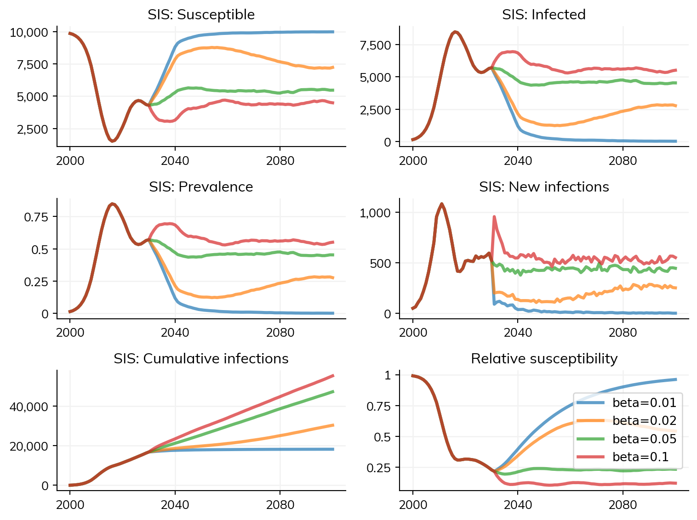

def step_state(self):
""" Progress infectious -> recovered """
recovered = (self.infected & (self.ti_recovered <= self.ti)).uids
self.infected[recovered] = False
self.susceptible[recovered] = True
self.update_immunity()
returnThe Sim object
As noted on the Model Structure page, the Sim is the main object for doing things with Starsim. Once you’ve created your modules for diseases and interventions, you will add them to the Sim, which will ensure that everything gets run in a sensible order, and that everything is nicely accessible afterwards.
On this page, we explain what happens when you create a Sim, and the particular order of steps taken when a Sim is run. We then provide a few common examples of how to create and run a Sim and when/why you might choose each one.
Creating and initializing a Sim
When you first create a sim, e.g. with sim = ss.Sim(), the resulting Sim object will be mostly empty with a few pre-set defaults. Most of the initialization is done when sim.init() is called. This completes the initialization with the following steps:
- Validating the parameters;
- Adding a
Timemodule to the sim (stored undersim.t), which looks after converting parameters between timesteps; - Adding
Peopleto theSim: if these are not supplied directly, Starsim will automatically addPeoplewith default age/sex structure; - Adding all the parameters and results from each
Moduleto theSim, and adding the states from eachModuleto thePeople; - Initializing any distributions contained anywhere within the parameters or states.
A Sim is automatically initialized if sim.run() is called.
Running a Sim
Order of operations
An important function of the Sim class is that it controls the order in which the different steps of each module are executed. Starsim allows users lots of flexibility regarding the timesteps for individual modules. For example, a common usage pattern is that you may only want to update your demographic modules once a year, but you may want to update your disease modules once per month, week, or day. The Sim class stores a plan for updating each module in the right order and with the right frequency. This is stored within a specialized Loop class housed within the Sim. Users typically won’t interact with this class directly, but it is worth knowing the order in which updates are made on each timestep.
Moduleshave astart_stepmethod which is called first. This usually just advances random number generators forward.- Any
Demographicmodules have theirstepmethod called - Any
Diseasemodules have theirstep_statemethod called - Any
Connectorshave theirstepmethod called - Any
Networkshave theirstepmethod called - Any
Interventionshave theirstepmethod called - Any
Diseasemodules have theirstepmethod called - The
Peopleclass has itsstep_diemethod called: this updates any people who died on this time step. Deaths are handled by modules, not byPeopledirectly, butstep_diemethod assembles all the causes of death across disease modules and demographic modules and reconciles them. This ensures that each agent’s death is uniquely attributable to a cause. Resultsare updated for thePeopleand theModules- Any
Analyzermodules have theirstepmethod called - Calls are made to
finish_stepfor theModules, thePeople, and theSim.
If you want to see more details, have a look at sim.loop.to_df() (after calling sim.init()) and it will show a dataframe of every step in the simulation. You can also use sim.loop.plot() to visualize each step.
Note that there are two separate update calls for diseases, step_state and then step. The step_state method happens before transmission, and the step method typically handles transmission. The step_state method typically handles disease progression, as in this example from the SIR model:
To illustrate the ordering of all these updates, let’s consider an example of a woman infected with pre-symptomatic COVID who, in the course of a single busy day, started developing COVID symptoms, took a COVID test, moved out of her parents’ house and into her husband’s house, and became pregnant. Starsim’s model update logic would order her day as follows: (1) become pregnant, (2) develop symptoms, (3) move house, (4) transmit COVID to anyone still in her contact networks, which at this point would include her husband but not her parents, (5) get COVID test.
There are a few principles that guide the logic about the update ordering. Updating the demographics first makes sense because we want to make sure we capture mother-to-child transmission. Suppose that during one month, a woman became pregnant and also acquired malaria; we want to ensure that the effects of malaria on her pregnancy are captured. Updating the network before disease transmission occurs is fairly arbitrary, but it means that transmission can occur with new partners, which is particularly relevant for sexually transmitted infections, especially when it’s an instantaneously-dissolving partnership.
Printing progress
It can be useful to see how the Sim is progressing, and the sim.run() method accepts a verbose argument that controls how frequently to provide updates. With verbose=1, you will see updates on progree on every timestep; with verbose=0.1 you will see updates every 10 timesteps, and so on. If you are running monthly or daily timesteps you can also use verbose=1/12 or 1/365 to avoid having too much printed output in your Python terminal. You can also use verbose=-1, which will only print output when the sim is complete.
Starting and stopping a run
Simulations can be partially run, stopped, and restarted using the sim.run(until=) argument. This can be useful for a few different reasons:
- To inspect the state of a simulation for mid-run (although you can also use an analyzer or the Python debugger for this)
- To modify the state of a simulation before continuing (although you can also use an intervention for this)
- To run part of a simulation only once, before copying it and running different scenarios (although note that copying a simulation can often take almost as much time as running it!)
Of these, the third use case is probably the most common. The example below illustrates how to do this.
import sciris as sc
import starsim as ss
# Define custom intervention
class sis_vaccine(ss.Intervention):
def __init__(self, start=2040, eff=1.0):
super().__init__()
self.start = start
self.eff = eff
return
def step(self):
sis = self.sim.diseases.sis
if sis.now == self.start:
sis.rel_trans[:] *= 1-self.eff
return
# Default parameters
pars = dict(
start = 2000,
stop = 2050,
diseases = 'sis',
networks = 'random',
verbose = 0,
)
# Define list of efficacies to run
effs = [0.0, 0.2, 0.5, 0.8, 1.0]
#%% Standard parallel run
T = sc.timer()
sims = []
for eff in effs:
s = ss.Sim(pars, label=f'Efficacy={eff}', interventions=sis_vaccine(eff=eff))
sims.append(s)
sims = ss.parallel(sims)
T.toc('Runtime using default')
#%% Shortcut using "until"
T = sc.timer()
sim = ss.Sim(pars, interventions=sis_vaccine())
sim.run(until=2039)
sims = []
for eff in effs:
s = sim.copy()
s.label = f'Efficacy={eff}'
s.interventions[0].eff = eff
sims.append(s)
sims = ss.parallel(sims)
T.toc('Runtime using "until"')
sims.plot()
ss.show()Runtime using default: 0.897 s
Runtime using "until": 1.08 s
Figure(768x576)
Here, there is relatively little time saved by using until; however, with a longer burn-in period, or more scenarios, the time savings may be greater.
You can also use this approach to modify the parameters of a simulation before continuing:
import starsim as ss
base_sim = ss.Sim(diseases='sis', networks='random', start=2000, stop=2100, verbose=False)
base_sim.run(until=2030)
sims = []
betas = [0.01, 0.02, 0.05, 0.10]
for beta in betas:
sim = base_sim.copy()
sim.diseases.sis.pars.beta = beta
sim.label = f'beta={beta}'
sims.append(sim)
msim = ss.parallel(sims)
msim.plot()Figure(768x576)